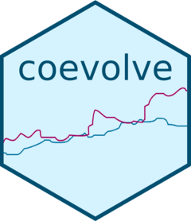
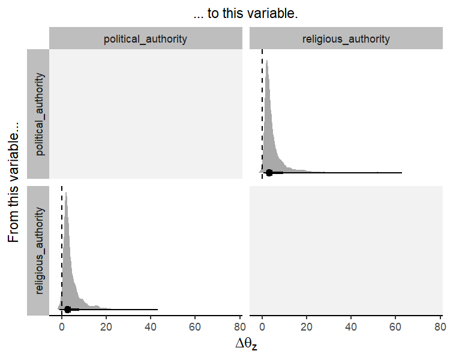

Overview
The coevolve package allows the user to fit Bayesian generalized dynamic phylogenetic models in Stan. These models can be used to estimate how variables have coevolved over evolutionary time and to assess causal directionality (X → Y vs. Y → X) and contingencies (X, then Y) in evolution.
While existing methods only allow pairs of binary traits to coevolve (e.g., BayesTraits), the coevolve package allows users to include multiple traits of different data types, including binary, ordinal, count, and continuous traits.
Installation
To use the coevolve package, you must first install the cmdstanr package (see full installation instructions here: https://mc-stan.org/cmdstanr/).
install.packages("cmdstanr", repos = c("https://mc-stan.org/r-packages/", getOption("repos")))You can then install the development version of coevolve with:
# install.packages("devtools")
devtools::install_github("ScottClaessens/coevolve")How to use coevolve
As an example, we analyse the coevolution of political and religious authority in 97 Austronesian societies. These data were compiled and analysed in Sheehan et al. (2023). Both variables are four-level ordinal variables reflecting increasing levels of authority. We use a phylogeny of Austronesian languages to assess patterns of coevolution.
fit <-
coev_fit(
data = authority$data,
variables = list(
political_authority = "ordered_logistic",
religious_authority = "ordered_logistic"
),
id = "language",
tree = authority$phylogeny,
# manually set prior
prior = list(A_offdiag = "normal(0, 2)"),
# arguments for cmdstanr
parallel_chains = 4,
refresh = 0,
seed = 1
)
#> Running MCMC with 4 parallel chains...
#>
#> Chain 1 finished in 441.6 seconds.
#> Chain 2 finished in 582.9 seconds.
#> Chain 3 finished in 621.8 seconds.
#> Chain 4 finished in 626.9 seconds.
#>
#> All 4 chains finished successfully.
#> Mean chain execution time: 568.3 seconds.
#> Total execution time: 627.2 seconds.
#> Warning: 22 of 4000 (1.0%) transitions ended with a divergence.
#> See https://mc-stan.org/misc/warnings for details.The results can be investigated using:
summary(fit)
#> Variables: political_authority = ordered_logistic
#> religious_authority = ordered_logistic
#> Data: authority$data (Number of observations: 97)
#> Phylogeny: authority$phylogeny (Number of trees: 1)
#> Draws: 4 chains, each with iter = 1000; warmup = 1000; thin = 1
#> total post-warmup draws = 4000
#>
#> Autoregressive selection effects:
#> Estimate Est.Error 2.5% 97.5% Rhat Bulk_ESS Tail_ESS
#> political_authority -0.67 0.53 -1.99 -0.03 1.00 2120 1768
#> religious_authority -0.78 0.59 -2.20 -0.03 1.00 2260 1766
#>
#> Cross selection effects:
#> Estimate Est.Error 2.5% 97.5% Rhat Bulk_ESS Tail_ESS
#> political_authority ⟶ religious_authority 2.32 1.03 0.38 4.45 1.00 1567 1971
#> religious_authority ⟶ political_authority 1.82 1.11 -0.28 4.07 1.00 1288 2124
#>
#> Drift parameters:
#> Estimate Est.Error 2.5% 97.5% Rhat Bulk_ESS Tail_ESS
#> sd(political_authority) 1.95 0.83 0.27 3.50 1.01 801 1193
#> sd(religious_authority) 1.29 0.80 0.06 2.94 1.00 761 1327
#> cor(political_authority,religious_authority) 0.26 0.32 -0.44 0.78 1.00 2732 2641
#>
#> Continuous time intercept parameters:
#> Estimate Est.Error 2.5% 97.5% Rhat Bulk_ESS Tail_ESS
#> political_authority 0.21 0.95 -1.56 2.09 1.00 4088 1162
#> religious_authority 0.21 0.94 -1.65 2.06 1.00 5112 2655
#>
#> Ordinal cutpoint parameters:
#> Estimate Est.Error 2.5% 97.5% Rhat Bulk_ESS Tail_ESS
#> political_authority[1] -1.31 0.91 -3.12 0.51 1.00 2736 2683
#> political_authority[2] -0.56 0.89 -2.32 1.24 1.00 3129 2891
#> political_authority[3] 1.64 0.92 -0.10 3.55 1.00 3268 2956
#> religious_authority[1] -1.53 0.92 -3.31 0.24 1.00 3019 3066
#> religious_authority[2] -0.84 0.90 -2.59 0.94 1.00 3329 3051
#> religious_authority[3] 1.60 0.95 -0.17 3.51 1.00 3205 3102
#> Warning: There were 22 divergent transitions after warmup.
#> http://mc-stan.org/misc/warnings.html#divergent-transitions-after-warmupThe summary provides general information about the model and details on the posterior draws for the model parameters. In particular, the output shows the autoregressive selection effects (i.e., the effect of a variable on itself in the future), the cross selection effects (i.e., the effect of a variable on another variable in the future), the amount of drift, continuous time intercept parameters for the stochastic differential equation, and cutpoints for the ordinal variables.
While this summary output is useful as a first glance, it is difficult to interpret these parameters directly to infer directions of coevolution. Another approach is to “intervene” in the system. We can hold variables of interest at their average values and then increase one variable by a standardised amount to see how this affects the optimal trait value for another variable.
The coev_plot_delta_theta() function allows us to visualise \(\Delta\theta_{z}\) for all variable pairs in the model. \(\Delta\theta_{z}\) is defined as the change in the optimal trait value of one variable which results from a one median absolute deviation increase in another variable.
coev_plot_delta_theta(fit)
#> Warning: Removed 235 rows containing non-finite outside the scale range (`stat_density()`).
This plot suggests that both variables influence one another in their coevolution. A standardised increase in political authority results in an increase in the optimal trait value for religious authority, and vice versa. In other words, these two variables reciprocally coevolve over evolutionary time.
Citing coevolve
When using the coevolve package, please cite the following papers:
- Ringen, E., Martin, J. S., & Jaeggi, A. (2021). Novel phylogenetic methods reveal that resource-use intensification drives the evolution of “complex” societies. EcoEvoRXiv. https://doi.org/10.32942/osf.io/wfp95
- Sheehan, O., Watts, J., Gray, R. D., Bulbulia, J., Claessens, S., Ringen, E. J., & Atkinson, Q. D. (2023). Coevolution of religious and political authority in Austronesian societies. Nature Human Behaviour, 7(1), 38-45. https://doi.org/10.1038/s41562-022-01471-y